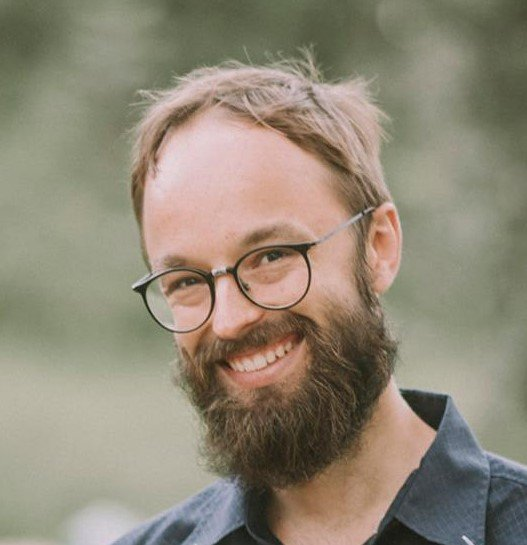

Eike Düvel
Postdoctoral researcher, Institute of Philosophy and Institute for Technology Assessment and Systems Analysis (ITAS), Karlsruhe Institute of Technology
I work in ethics and political philosophy, mainly on the ethics of risk, climate justice, and AI and democracy.
Papers
Published and forthcoming
-
Non-identity and compensation for climate change
This paper examines the implications of the Non-Identity Problem (NIP) for real-world climate change-related duties, responding to Lukas Tank’s Minor Difference Claim. Tank argues that robust climate action (mitigation, adaptation, and compensation) is already required to respond to the foreseeable negative effects on individuals whose identities are fixed, so accepting (or “biting the bullet” on) the NIP makes only a minor difference to our climate change-related duties.
We challenge this view by arguing that accepting the NIP makes a not-so-minor difference for compensatory climate duties. First, it affects their extent. Second, it generates highly unequal compensatory claims both across individuals born at different times (intragenerational difference) and among those exposed to the same climate impacts at different times (intertemporal difference). We conclude that one must either accept these implications or develop a strategy to resolve or avoid the NIP.
-
Fairness in emissions accounting: A moral responsibility approach
In this paper we present a common approach to fair emissions accounting (Common Approach) and argue that it is misguided. Instead, we offer our Moral Responsibility Approach as an alternative. We argue that the primary consideration for choosing an emissions accounting mechanism from a fairness perspective ought to be who ought to take moral responsibility for emissions. We provide some criteria for moral responsibility in the context of climate change and present a moderate defense of CBEA as the mechanism that, on balance, best meets these criteria.
-
The obligation to long-term governance: A philosophical analysis
Many of the problems currently facing our societies are long-term. Long-term problems are complex, often large-scale, and may require considerable planning and resources to avert undesirable outcomes in the (far) future. Consider issues such as climate change, nuclear waste disposal, and the sustainable management of ecosystems. The ability of a society to adequately address the most relevant problems depends on appropriate long-term governance, i.e., strategic, consistent, and coherent governance over an extended period of time. Serious obstacles are inherent in long-term governance. These include short election cycles, intergenerational trade-offs, and the uncertainties involved in long-term decision-making. Liberal democracies appear to encounter difficulties in providing adequate responses to pertinent long-term issues, such as climate change, due to the institutions’ current design, which primarily focuses on safeguarding the interests of the present generation. This paper introduces long-term governance as a distinct philosophical topic by defining it in relation to a novel perspective on long-term challenges. The paper defends an obligation to engage in long-term governance based on the basic rights of those who do not yet vote. This includes, in particular, an obligation to engage in research into long-term governance institutions.
-
The ethics of climate change loss and damage
In the last decade, the international community has become increasingly aware that some negative impacts of climate change cannot be prevented. During the COP19 in Warsaw in 2013, the parties who agreed to the Warsaw International Mechanism (WIM) acknowledged that there were already greater climate impacts than could be reduced by adaptation (UNFCCC, 2014). These impacts have been called “loss and damage”, and the policies and measures that deal with them are usually referred to as L&D, or L&D measures or policies. Since then, examples of loss and damage have unfortunately become abundant, but we lack a systematic approach to the ethical issues surrounding loss and damage. This article provides an overview of some of the ethical issues surrounding loss and damage in the context of climate change. We discuss what should count as loss and damage, how access to justice for loss and damage should be granted and their different rationale, as well as issues of noneconomic and nonanthropocentric loss and damage.
- Human rights-based precautionary approaches and risk imposition in the context of climate change
- Ethics and risks: Approaches and issues
In preparation
- Emissions accounting for AI research emissions
- Making sense of resilience: Energy policy and normative trade-offs
- Stranded assets and legitimate expectations
- Contractualism and risk
Teaching
I teach ethics and political philosophy at BA, MA and PhD level, in German and English. Much of my teaching brings ethics into courses for students in engineering and the natural sciences.
- 2024–26Philosophical perspectives on risky technologies. PhD seminar, ITAS, KIT.
- 2026Ethics modules in energy and environment, environmental communication and financial mathematics. Co-teaching, KIT.
- 2026Contractualism and risk. Guest lecture, Erasmus University Rotterdam.
- 2024The political philosophy of artificial intelligence. Seminar, KIT.
- 2024Ethics and resource cycles. Seminar, KIT.
- 2018Theories of intergenerational justice. Seminar, University of Graz.
I supervise PhD projects on the ethics of battery raw material mining, the moral agency of AI systems and the resilience of energy systems.

Projects
- Energy System Design Designing the energy system of the future Member of the writing team for the programme proposal, responsible for its section on ethical aspects
- Methane Removal A critical assessment and research agenda Lead on the ethics chapter of the synthesis paper
- TwinRISE Trusted AI-generated digital twins for research infrastructures and scientific excellence Postdoctoral researcher on ethical, legal and social aspects
Recent talks
- Nov 2026Can democracy be delegated? ENCODE closing conference, Rotterdam.
- Sep 2026Can democracy be delegated? MANCEPT Workshops, Manchester.
- Jun 2026AI and the value of public deliberation. Conference on Large-Scale AI Risks, KU Leuven.
- Sep 2025The persisting relevance of the non-identity problem. GAP.12, Düsseldorf.
- Jan 2025The not-so-minor difference claim. Climate Ethics above 1.5°C, Rotterdam.
Public philosophy
- 2026Justice in the shadow of uncertainty: Whom should we save? Public lecture and discussion, Wissenschaft & Weisheit series, University of Zurich (in German).
- 2024Commentary on the German Ethics Council’s statement on climate justice, with Laura García Portela, for the Science Media Center. Quoted in Süddeutsche Zeitung.
- 2023Fair public transport. Citizens’ workshop at technik.kontrovers, Karlsruhe.
- 2016–18Founding member and editor of the blog Climate Footnotes.